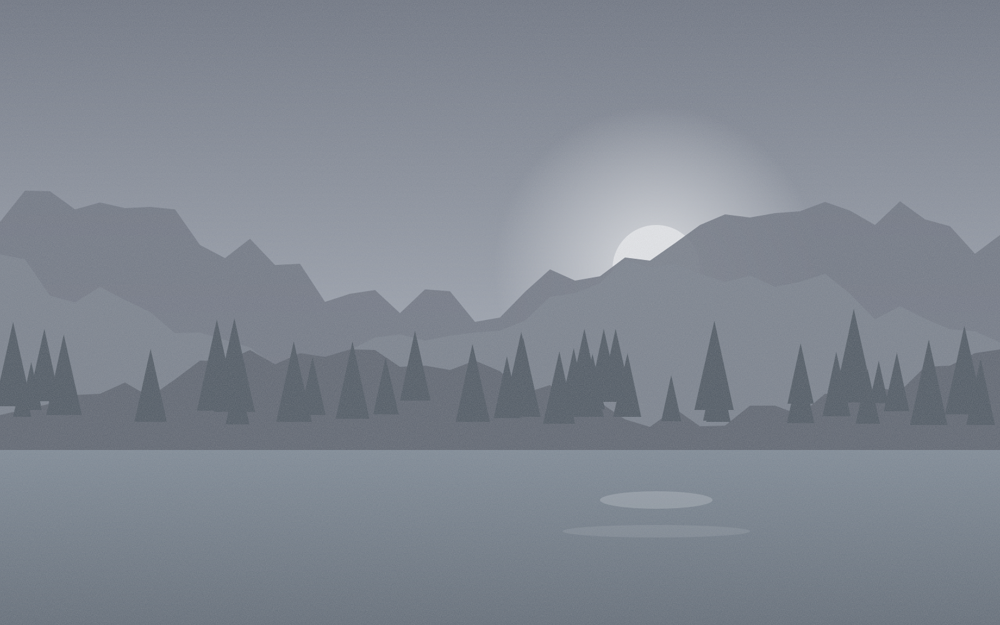
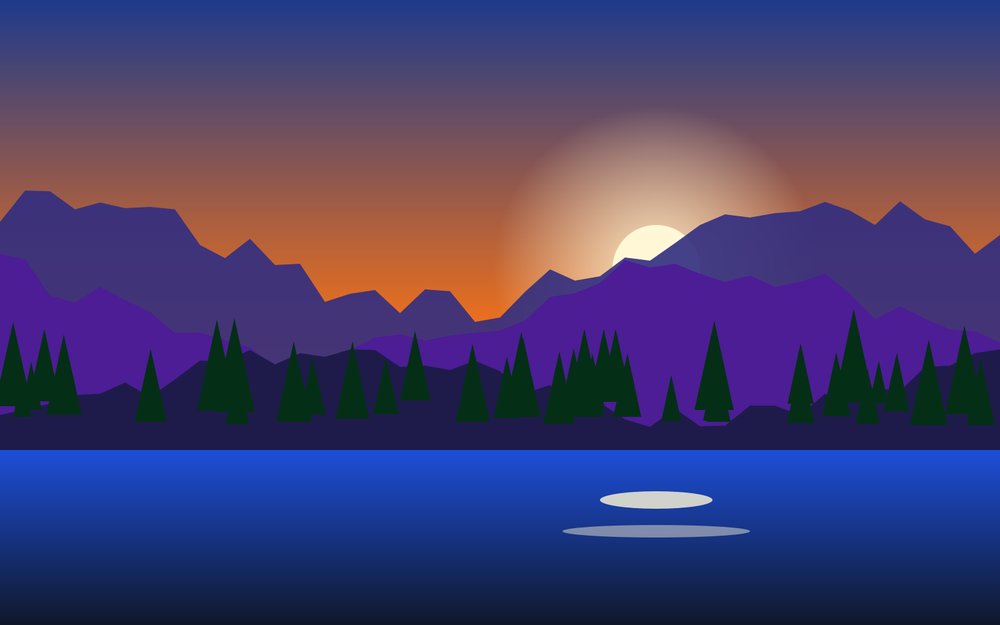

Plugin · Spotlight
Uma luz que te segue.
Três modos: reveal (mostra uma camada só dentro do foco), flashlight (escurece fora) e focus (desfoca o entorno). Formas de 10 tipos, inércia, conteúdo que se desloca com o ponteiro e modo manual pela API. Hosts são contentores — nunca uma <img> direta.
1 Reveal
O host é um contentor (<figure>); a camada superior leva data-emerge-spotlight-layer. Só aparece dentro do foco.


<figure data-emerge-spotlight="reveal" data-emerge-spotlight-radius="140"> <img src="base.jpg"> <img data-emerge-spotlight-layer src="cor.jpg"> </figure>
2 Flashlight e Focus
Flashlight
Escurece tudo o que está fora do foco. Ótimo para secções de conteúdo que queres “explorar” com o ponteiro — a luz revela o que está à volta.
Focus
Desfoca e escurece o entorno, deixando nítido só o que está sob o cursor. Leitura guiada em páginas densas.
Move o rato lentamente sobre este parágrafo: o blur 6 fora do foco cria profundidade sem esconder o conteúdo.
3 Formas
Mesma figura, outras formas de foco (-shape) — incluindo fluid com trail, swirl e wobble.
4 Conteúdo que se desloca (-move) e -reverse
Parallax interno
move="both" · intensity 18 — o conteúdo foge suavemente do foco.
Efeito invertido
reverse — o escurecimento fica dentro do foco; o resto fica claro.
5 Modo manual (API)
Criado com trigger:"manual": quem manda no foco é o teu código. Os botões ligam, desligam e lançam o foco para posições exatas.
Emerge.Spotlight.create("#mfig", { mode:"reveal", trigger:"manual", radius:160 })
O foco viaja com a inércia do plugin (easing) — mais fluido do que seguir o rato à bruta.